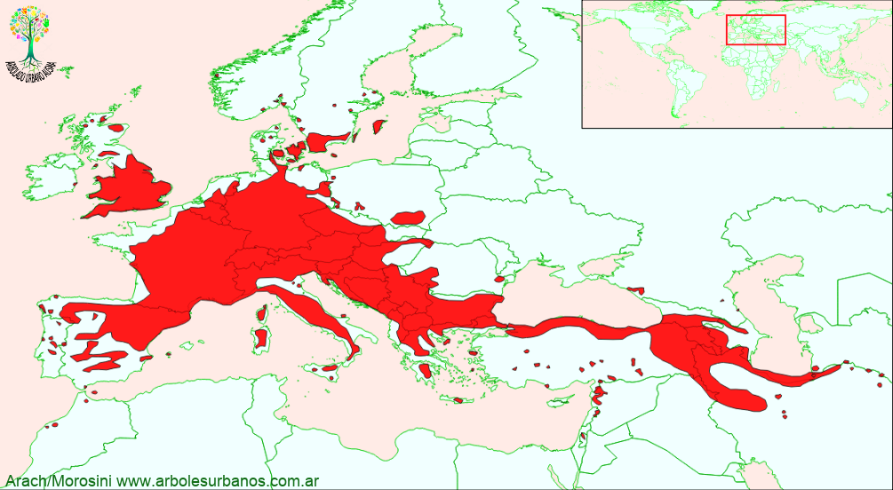

Click en las imágenes para ampliar

{kind=link}
{kind=link}
{kind=link}
{kind=link}
Nogal
NOMBRE CIENTÍFICO : Junglans regia
FAMILIA BOTÁNICA : Jungladáceas
O RIGEN : Podemos decir que es originario del Sudeste de Europa y oeste de Asia, aunque hay autores que dicen que al ser un árbol domesticados desde hace tanto tiempo el origen puede ser un área más reducida y llevada a otra mas grande por los distintos pueblos
D ESCRIPCIÓN GENERAL : Árbol caducifolio, monoico, de 18-20 m de altura, con el tronco grueso y la copa extendida y amplia. Corteza lisa y gris plateada cuando joven, fisurada a lo largo del tronco cu a ndo envejece de un color gris ceniciento . Ramas erectas y corpulentas.
HOJAS: S on alternas, compuestas, imparipinnadas, con 5-9 folíolos ovales u obovados de 6-15 cm de longitud, agudos, de consistencia algo coriácea y margen entero
FLORES: Las flores femeninas se agrupan en espigas en los extremos de los brotes del año. Florece generalmente desde noviembre a diciembre. Flores masculinas en amentos verdosos, cilíndricos, colgantes, en grupos de 1-3 sobre las ramillas del año anterior.
F RUTOS : Frutos en grupos de 1-4 sobre un corto pedúnculo. Son globosos, lisos, verdosos que recubren una nuez comestible, de color pardo anaranjada
R EPRODUCCIÓN : Es fácil de reproducir por semilla, del mismo modo que otros frutales, las variedades se multiplican por injerto. Se las puede sembrar en otoño, o en primavera realizando antes una estratificación de 60 días.
U SOS : Es un árbol multipropósito ya que proporciona muy buena madera además de la producción de fruta. Por su porte y por su copa extendida, se lo planta como ejemplares aislados
P ARTICULARIDADES : L os suelos no son un problema para este árbol, lo único que requiere es que sean profundos y bien drenados